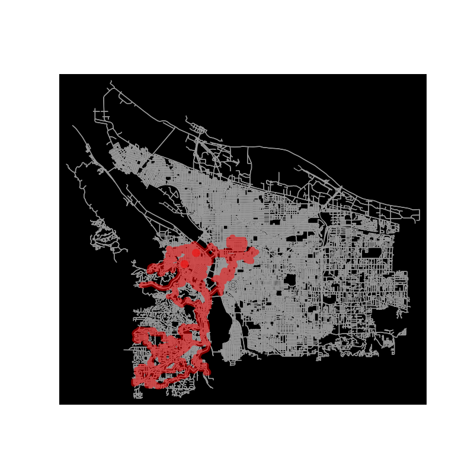
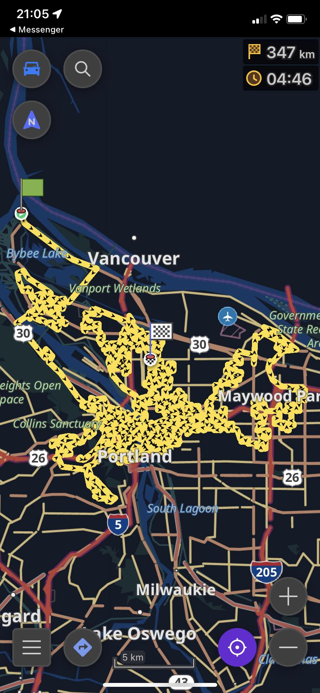

When my friends were planning a road trip, I started to think about random walks -- a mathematical way to describe taking paths in space by picking a random direction at each step. Unlike random walks in higher dimensions, random walks in 2D return to the starting point with probability 1. Thus if you were to take a random road trip (ignoring bridges and underpasses), you would eventually end up at your starting point!
Based off this thought I began to look into the technicalities of a road trip based on random walks, much to the chagrin of my friends who thought it was a terrible idea. While a purely random road trip would be out of the question, my friends thought a short one, perhaps starting from our accommodation in the morning to arrive at a restaurant for lunch, would be alirght.
So now the problem was how to find a random path between two points in a city. I used the OpenStreetMap database to get graphs of the roads, following Geoff Boeing's work on OSMnx, a Python package for working with OpenStreetMap data.
Generating a nice path between two points for a drive is a bit tricky, since you don't want it to be too long or too loopy. I tried the basic algorithms of BFS and DFS, but BFS went all over the place and DFS often found extremely long paths. I tried A-star and other more bespoke algorithms, but none really worked well. What ended up being feasible was doing DFS but bounding the path length during the search
Here is an excessively long path generated in Portland.

After the maps were generated I could export them to OSMmaps to use in the app on my phone.

It ended up being way too laggy to be usable on my phone, so we just ended up random walking the old fashioned way -- by the whims of our minds.
I would be interested in trying this again in the future, with updated tools. Contact me if this is something you would like to try out.
The code is here, but it's nothing to write home about. One could probably ask chatGPT to do much better these days.